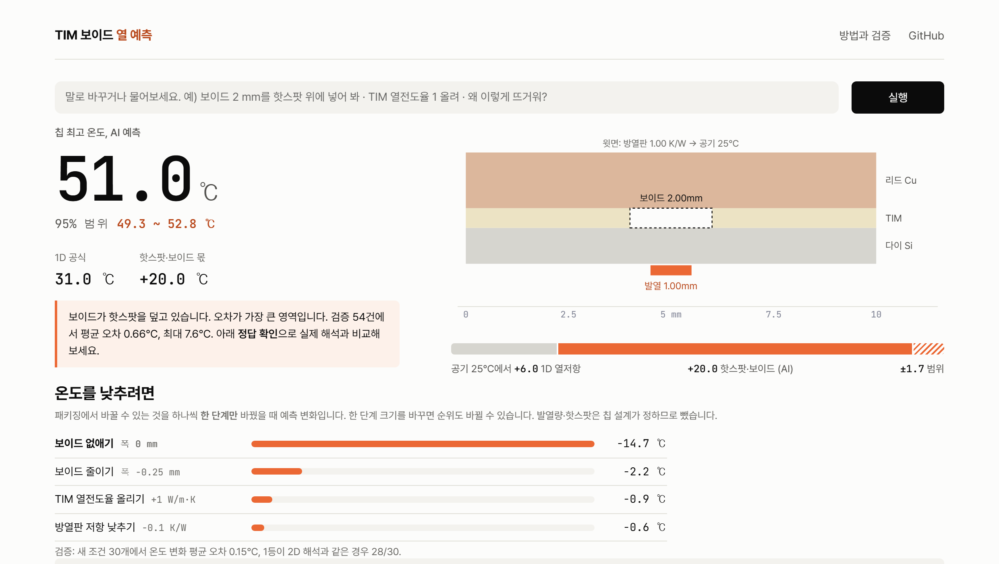

반도체 칩은 뜨거워지면 느려지고 빨리 고장 납니다. 열은 고르게 나지 않고 가장 뜨거운 곳(핫스팟)에 몰려 위의 뚜껑으로 빠져나갑니다. 반도체 칩과 뚜껑 사이를 메우는 열 전달 페이스트(TIM)(컴퓨터의 서멀 구리스와 같은 역할)에 공기 빈틈(보이드)이 생기면, 공기는 열을 거의 못 전해 길이 막힙니다.
그런데 ① 정밀 계산(2D 열해석)은 1회 약 3초라 빈틈 위치·크기 3,156가지를 다 보려면 약 161분, ② 업계 검사 기준(예: MIL-STD-883의 반도체 칩 접합 기준)은 빈틈의 면적만 봅니다.
같은 5 W 반도체 칩에서 폭 2 mm 빈틈이 핫스팟 바로 위면 최고 온도 +14.6℃, 중심이 2 mm만 떨어져도 +0.1℃. 열은 핫스팟 바로 위로 몰려 나가서, 그 길을 막으면 크게 오르고 옆을 막으면 돌아갑니다. 차가 몰리는 차선을 막느냐, 빈 차선을 막느냐의 차이로, 면적만 보는 기준은 이를 못 가립니다.

"보이드 2 mm를 핫스팟 위에 넣어 봐"라고 쓰면 챗GPT 같은 AI(LLM)가 조건을 바꿉니다. 온도는 AI가 지어내지 않고 계산 도구가 냅니다.
간단한 공식(1D 열저항)으로 먼저 계산하고, 공식이 못 잡는 핫스팟·빈틈 효과만 AI가 더합니다. "95% 확률로 이 사이" 범위도 함께, 넓으면 "자신 없음" 경고.
무엇을 바꾸면 온도가 가장 많이 내려가는지 순위로 보여줍니다. 위 화면에서는 "보이드 없애기"(빈틈 없애기)가 1등.
버튼 하나로 같은 조건을 정밀 계산(2D 해석)해 AI 답과 비교. 빈틈 3,156가지 위험 지도를 AI는 0.3초에 그립니다 (정밀 계산이면 약 161분).